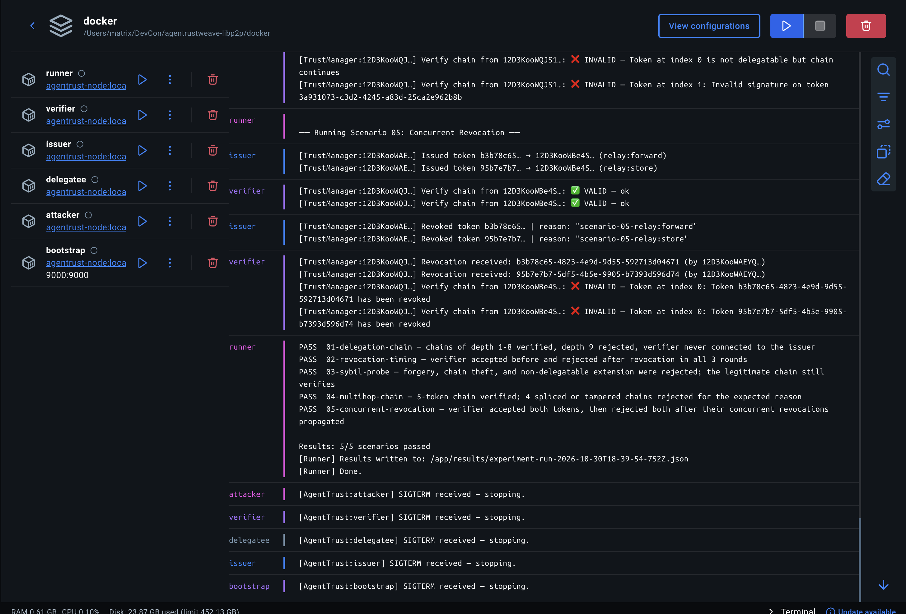
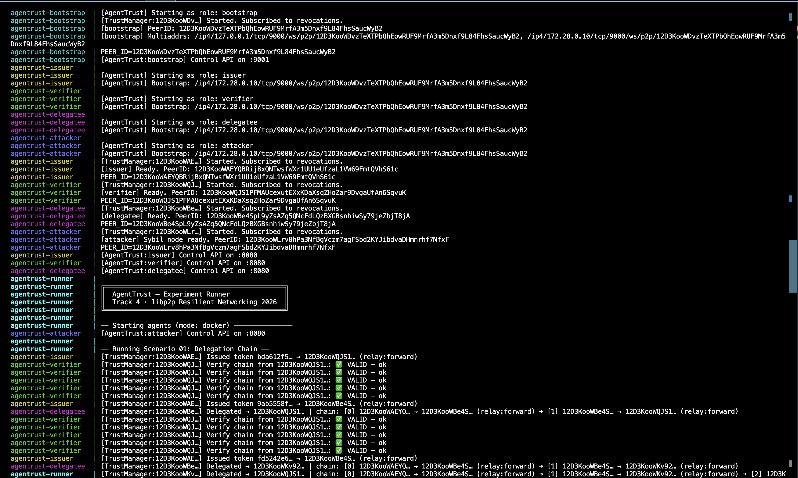
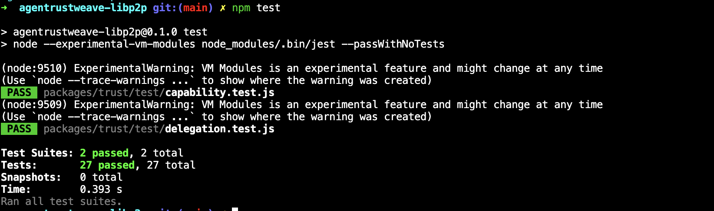
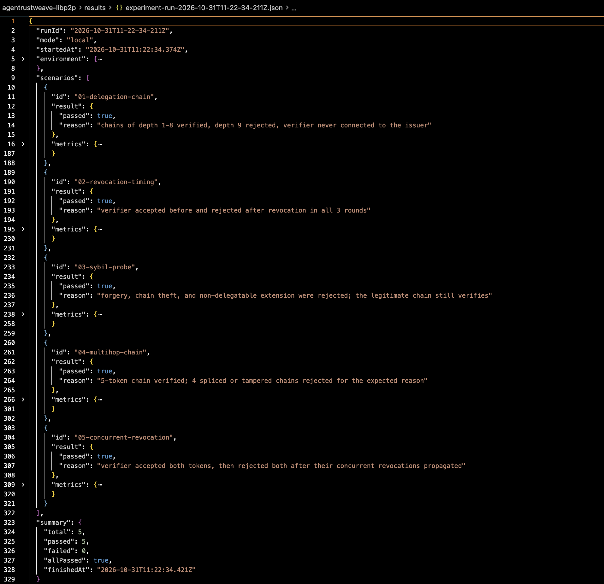
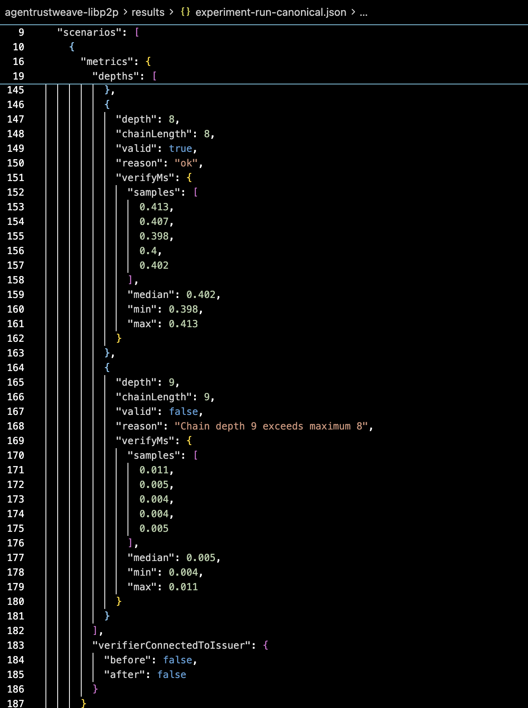
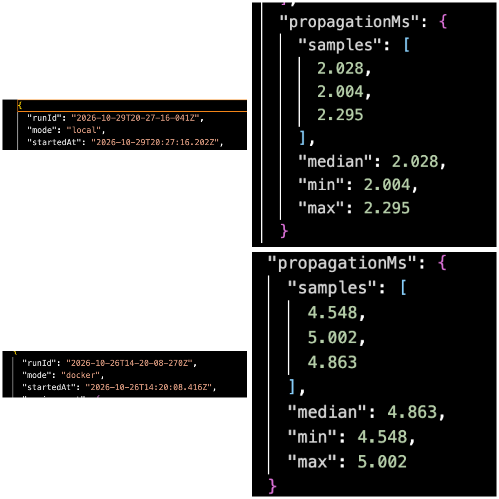
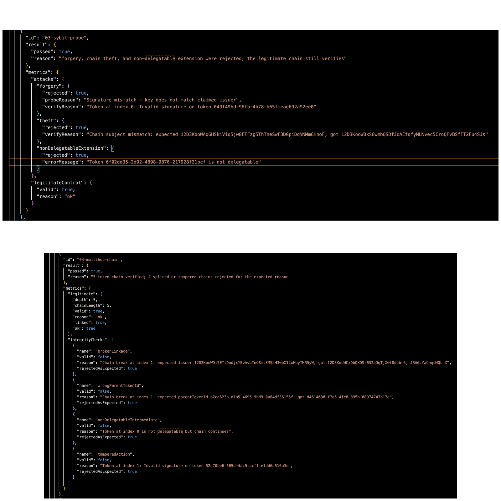

libp2p answers who is this peer? — AgenTrust answers what may this peer do? Ed25519 capability chains, offline verification, GossipSub revocation. No central authority.
libp2p's Noise protocol + PeerID provides cryptographic identity — but authorization is explicitly left to the application layer. AgenTrust fills that gap.
PeerID derived from Ed25519 keypair. Noise handshake authenticates the channel. You know exactly who you're talking to.
Provided by libp2pWho may this peer act on behalf of? How do you delegate and revoke permissions in a decentralized mesh without calling home?
AgenTrust fills thisAutonomous agents can't round-trip to an authority for every permission check. They need offline-verifiable delegation chains and real-time revocation via gossip.
Research prototypeFour primitives layered on top of what libp2p already provides — no new transport, no new crypto library.
Every claim is backed by a JSON result file in /results. No unverified assertions.
| # | Scenario | What it proves | Key metric | Status |
|---|---|---|---|---|
| 01 | Delegation sweep | Verifier never connected to issuer at any point | verifierConnectedToIssuer: false | ✓ MEASURED |
| 02 | Depth boundary | Depths 1–8 accepted; depth 9 rejected | Per-depth verifyMs + rejection proof | ✓ MEASURED |
| 03 | Sybil / forgery | Spliced chains, tampered tokens, stolen grants all rejected | Forgery acceptance rate: 0% | ✓ MEASURED |
| 04 | Chain integrity | Modified intermediate node invalidates entire chain | All negative test cases caught | ✓ MEASURED |
| 05 | Concurrent revocation | Simultaneous revoke events via GossipSub mesh | propagationMs — local & Docker mode | ✓ MEASURED |
Measured Results and Evidences.







Local figures are 5-run medians from results/bench-summary.json. Docker propagation is the canonical mesh run.
Real inter-container GossipSub. Real libp2p Noise handshakes between separate OS processes. Not simulated.
Living document — §6 reports only measured results. Claims not backed by measurement are moved to §7 Future Work.
libp2p provides authenticated peer identity through PeerID and Noise, but places authorization entirely in the application layer. As autonomous agent nodes increasingly coordinate over peer-to-peer meshes, the absence of a standard verifiable authorization primitive creates a critical gap: agents cannot delegate permissions, verify capabilities offline, or revoke grants without introducing a central authority.
We present AgenTrust — an application-layer capability system built exclusively on primitives libp2p already ships. AgenTrust issues Ed25519 capability tokens bound to PeerIDs, supports transitive delegation chains up to depth 8, enables offline verification without round-trips to the original issuer, and propagates revocations as issuer-signed events on GossipSub.
We evaluate the system across five reproducible experiment scenarios on both a local in-process harness and a five-container Docker testnet, reporting per-depth verification latency, revocation propagation timing, and comprehensive attack rejection rates. Our contribution is not new cryptography but integration evidence: the same Ed25519 keys used for PeerID can anchor a UCAN-inspired capability chain, and the same GossipSub mesh used for consensus can carry revocations — yielding trust-as-infrastructure for agent-native libp2p with no additional network dependencies.
Identity vs authorization split. Threat model: forgery, replay, Sybil, delegation abuse. Capability token format and semantics.
Draft completeIssue / delegate / verify / revoke protocol spec. TrustManager design. GossipSub revocation propagation path.
Draft completeReports only measured results. Scenarios 01–05. Per-depth timings. Docker mesh propagation. All raw JSON in /results.
Measured resultsZK proofs for chain privacy. Persistent revocation store. WAN-scale partition testing. Key rotation. Sybil flood resistance.
Honest scopeProtocol researchers value precision about scope. Here is ours, plainly.
Building application-layer authorization infrastructure for libp2p — filling the gap between cryptographic identity (what libp2p provides) and verifiable capability delegation (what agentic P2P systems actually need).